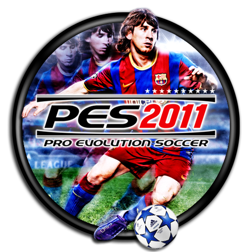
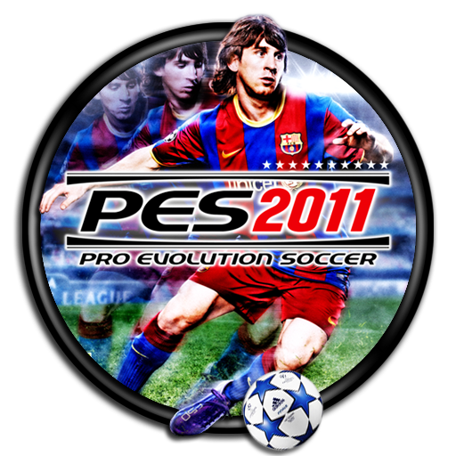

Penghasilan dan Kekayaan Lionel Messi
Kekayaan
Pada bulan Maret 2010, France Football menempatkan Messi di daftar teratas sebagai pemain terkaya di dunia, di depan David Beckham dan Cristiano Ronaldo,
dengan £ 29.600.000 (€ 33 juta) dalam pendapatan gabungan dari gaji, bonus dan laba di luar sepak bola kekayaan bersihnya diperkirakan sebesar $ 110 juta.
Gaji
Pada Desember 2012, FC Barcelona mengumumkan bahwa Messi akan menandatangani perpanjangan kontrak 5 tahun yang akan membuatnya tetap di FC Barcelona sampai
2018 dan meningkatkan gaji pokok sebesar € 16.000.000 net ($ 21.200.000), yang akan membuatnya pemain dengan gaji tertinggi dalam dunia sepak bola.
Sebagai braket pajak untuk tingkat pendapatan di Spanyol adalah 56%, itu berarti bahwa Barca harus membayar pajak penghasilan Messi dari sedikit lebih dari
€ 20 juta ($ 26.500.000)klausul buy-out formalnya tetap di € 250 juta.
Media
Dia menjadi ikon pada bagian depan sampul video game Pro Evolution Soccer 2009 dan Pro Evolution Soccer 2011 dan juga terlibat dalam kampanye promosi untuk
permainan tersebut. Messi, bersama dengan Fernando Torres, masuk menjadi cover Pro Evolution Soccer 2010 dan juga terlibat dalam pengambilan gerakan seta
trailer game tersebut. Messi disponsori oleh perusahaan pakaian olahraga Jerman Adidas serta fitur dalam iklan televisi.
Pada bulan Juni 2010, Messi juga menandatangani kontrak tiga tahun dengan Herbalife yang keuangannya lebih mendukung Leo Messi Foundation
 


Sponsor
Pada bulan September 2012, Messi menjadi duta merek global dari Turkish Airlines. Messi menembak sebuah iklan untuk maskapai dengan bintang NBA Kobe Bryant.
Dalam komersial terbaru maskapai, duo bersaing untuk memenangkan perhatian dari seorang anak muda.
Pada Januari 2013, Messi tampil dalam iklan singkat untuk produk pembersih muka asal Jepang, Scalp-D.
Iklan itu juga menunjukkan pemain Argentina ini berbicara dalam beberapa kata-kata bahasa Jepang.
Pada Juli 2013, Messi tampil di iklan aplikasi messaging WeChat di Cina. Dia mengenakan Adidas suite dan membawa dua maskots WeChat.
WeChat adalah sebuah platform aplikasi lintas pesan dari Tencent.